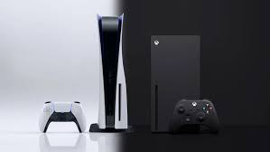
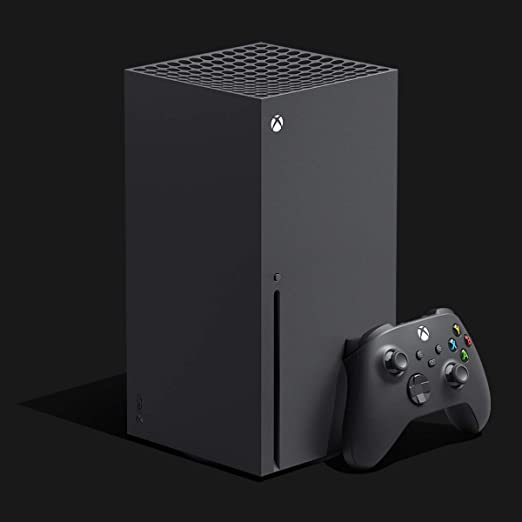
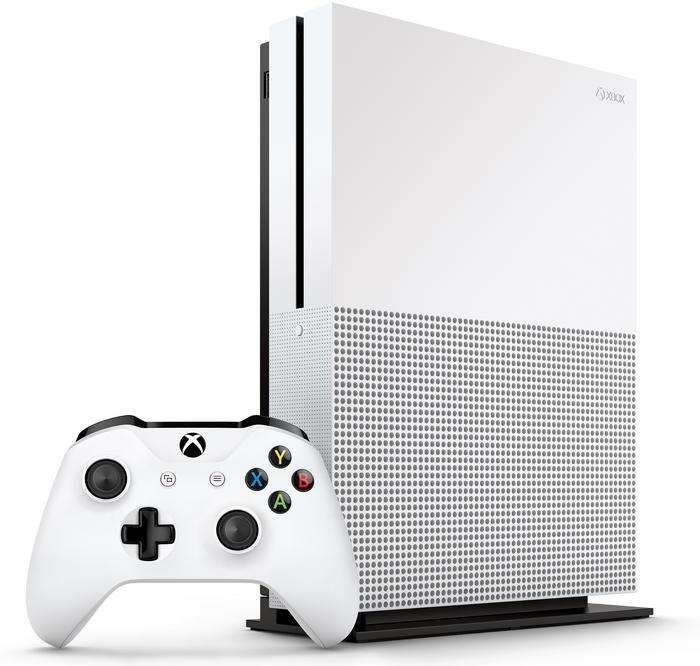
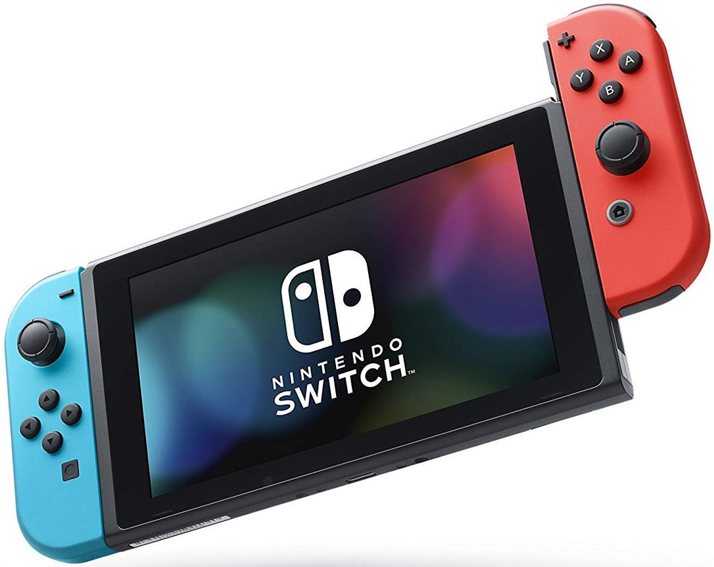

Sony Playstation 5
The PlayStation 5 is powered by a custom system on a chip (SoC) designed in tandem by AMD and Sony, integrating a custom 7nm AMD Zen 2 CPU with eight cores running at a variable frequency capped at 3.5 GHz. The integrated GPU is also a custom unit based on AMD's RDNA 2 graphics architecture. The GPU has 36 compute units running at a variable frequency capped at 2.23 GHz, making it capable of a peak theoretical performance of 10.3 teraflops. The GPU supports hardware accelerated real-time ray tracing, a rendering technique that allows for realistic lighting and reflections.The console has 16 GB of GDDR6 SDRAM with a peak bandwidth of 448 GB/s, and integrates Bluetooth 5.1, and 802.11ax (Wi-Fi 6).
Playstation official pageSony Playstation 4

The PlayStation 4 uses an Accelerated Processing Unit (APU) developed by AMD in cooperation with Sony. It combines a central processing unit (CPU) and graphics processing unit (GPU), as well as other components such as a memory controller and video decoder. The CPU consists of two 28 nm quad-core Jaguar modules totaling 8 x86-64 cores, 7 of which are available for game developers to use. The GPU consists of 18 compute units to produce a theoretical peak performance of 1.84 TFLOPS. The system's GDDR5 memory is capable of running at a maximum clock frequency of 2.75 GHz (5500 MT/s) and has a maximum memory bandwidth of 176 GB/s. The console contains 8 GB of GDDR5 memory, 16 times the amount of RAM found in the PS3 and is expected to give the console considerable longevity. It also includes secondary custom chips that handle tasks associated with downloading, uploading, and social gameplay. These tasks can be handled seamlessly in the background during gameplay or while the system is in sleep mode. The console also contains an audio module, which can support in-game chat as well as "a very large number" of audio streams for use in-game. All PlayStation 4 models support high dynamic range (HDR) color profiles.
Playstation official pageXbox Series X
The Xbox Series X is powered by a custom 7 nm AMD Zen 2 CPU with eight cores running at a nominal 3.8 GHz, or when simultaneous multithreading (SMT) is used, at 3.6 GHz. One CPU core is dedicated to the underlying operating system. The graphics processing unit is also a custom unit based on AMD's RDNA 2 graphics architecture. It has a total of 56 compute units (CUs) with 3584 cores, with 52 CUs and 3328 cores enabled, and will be running at a fixed 1.825 GHz. This unit is capable of 12 teraflops of computational power. The unit ships with 16GB of GDDR6 SDRAM, with 10GB running at 560GB/s primarily to be used with the graphics system and the other 6GB at 336GB/s to be used for the other computing functions. After accounting for the system software, approximately 13.5GB of memory will be available for games and other applications, with the system software only drawing from the slower pool. The Xbox Series X target performance is to render games at 4K resolution at 60 frames per second, with the console being about four times as powerful as the Xbox One X. The Series X can support up to 120 frames per second, and can render up to 8K resolution.
Xbox official pageXbox One
The Xbox One is powered by an AMD "Jaguar" Accelerated Processing Unit (APU) with two quad-core modules totaling eight x86-64 cores clocked at 1.75 GHz, and 8 GB of DDR3 RAM with a memory bandwidth of 68.3 GB/s. The APU is built on TSMC's 28nm process. The memory subsystem also features an additional 32 MB of "embedded static" RAM, or ESRAM, with a memory bandwidth of 109 GB/s. For simultaneous read and write operations, the ESRAM is capable of a theoretical memory bandwidth of 192 GB/s and a memory bandwidth of 133 GB/s has been achieved with operations that involved alpha transparency blending. The system includes a non-replaceable hard drive and a Blu-ray Disc optical drive. 138 GB of hard drive space is used by the operating system, with the remainder available for the storage of games. Since the June 2014 software update, up to two USB drives can be connected to Xbox One to expand its capacity. External drives must support USB 3.0 and have a capacity of at least 256 GB.
Xbox official pageNintendo Switch
Original Switch models were released with model number "HAC-001". The Switch uses a system-on-chip from the Tegra family of products, developed in partnership with Nvidia. No specific details were revealed beyond that it is a "custom" Tegra chip "based on the same architecture as the world's top-performing GeForce gaming graphics cards" that are common in personal computers, and has a custom API known as "NVN", which is designed to "bring lightweight, fast gaming to the masses". Takeda described the Nvidia chipset as being critical for delivering gamers a level of performance similar to that which they experience on personal computers, helping to achieve "high performance but low power consumption" for the Switch. Pre-release reports, unconfirmed by either Nintendo or Nvidia, stated that the SoC would be a standard Nvidia Tegra X1 instead, composed of four ARM Cortex-A57 and four ARM Cortex-A53 CPU cores along with 256 Maxwell-based CUDA GPU cores. This was later corroborated by an analysis on the console done by Tech Insights in March 2017. The CPU cores are clocked at 1.020 GHz. While the SoC features 8 CPU cores, the Switch only uses the 4 Cortex-A57 cores, of which 1 is reserved to the operating system. The GPU cores are clocked at 768 MHz when the device is docked, and in handheld mode, fluctuating between the following speeds: 307.2 MHz, 384 MHz, and 460 MHz. This gives the Switch's GPU a theoretical peak performance of 393 GFLOPS in docked mode and 236 GFLOPS in handheld mode. A later iFixit teardown of the final product confirmed 4GB of LPDDR4. It's clocked at 1600 MHz in docked mode, while at a reduced 1331.2 MHz in handheld mode.
Nintendo official page